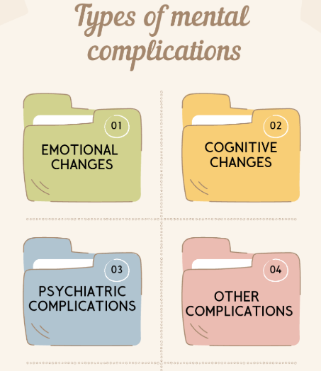
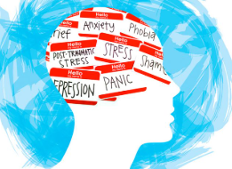

MENSTRUATION'S EFFECT ON MENTAL HEALTH
Menstruation can have a significant impact on a woman's mental health, and it's essential to acknowledge and address these effects. It's important to
know that menstruation affects mental health due to the complex interplay between hormonal fluctuations, neurotransmitters and brain regions.
HERE'S A SIMPLIFIED EXPLANATION OF THE SCIENCE BEHIND IT
HORMONAL FLUCTUATIONS
1.ESTROGEN AND PROGESTERONE - During the menstrual cycle, estrogen and progesterone levels surge and drop. Estrogen influences serotonin, dopamine, and other neurotransmitters, while progesterone affects GABA and glutamate.
2.NEUROSTEROIDS- Estrogen and progesterone are converted into neurosteroids in the brain, which modulate neuronal activity and synaptic plasticity.
NEUROTRANSMITTERS AND BRAIN REGIONS
1. SEROTONIN- Estrogen influences serotonin levels, which regulate mood, appetite, and sleep. Decreased serotonin during menstruation can contribute to symptoms like depression, anxiety, and irritability.
2.DOPAMINE- Estrogen also affects dopamine, involved in reward processing, motivation, and pleasure. Fluctuations in dopamine can lead to mood swings and emotional changes.
3.GABA AND GLUTAMATE- Progesterone's influence on GABA and glutamate can affect anxiety, stress, and emotional regulation.
4.HYPOTHALAMIC-PITUITARY-ADRENAL(HPA) AXIS- The HPA axis, responsible for stress response, is also affected by hormonal fluctuations. This can lead to increased stress, anxiety, and emotional reactivity.
BRAIN REGIONS
1. AMYGDALA- The amyglada, responsible for emotional processing, is sensitive to hormonal fluctuations. Increased activity in the amygdala can contribute to emotional reactivity and anxiety.
2.PREFRONTAL CORTEX (PFC)- The PFC, involved in decision-making, planning, and emotional regulation, is also affected by hormonal changes. Decreased PFC activity can lead lead to impulsive behavior and emotional dysregulation.
Now, since the scientific explanation is clear behind the irregularities of emotions, its time to know about
few of the menstrual complications related to mental health. They are listed below...

EMOTIONAL CHANGES
Menstruation can significantly changes emotions in a women hence it is important to notice the changes in emotions. Few common emotional changes are :
- MOOD SWINGS - Hormonal fluctuations can lead to irritability, anxiety, and depression.
- ANXIETY - Some women may experience increased anxiety, worry or fear during their menstrual cycle.
- DEPRESSION - Menstruation can exacerbate existing deprssion or trigger new episodes.
COGNITIVE CHANGES
Menstruation doesn't always comes with physical cramps and flow but with mental cognitive changes as well. Some of them are :
- BRAIN FOG - Hormonal changes can affect cognitive functions, leading to difficulties with concentration, memory, and decision-making.
- FATIGUE - Physical and emotional exhaustion can impact mental performance and daily functioning.
PSYCHIATRIC COMPLICATIONS
Menstruation also accompanies by psychiatric disorders as well. Some of them are :
- PREMENSTRUAL DYSPHORIC DISORDER - Severe emotional and physical symptoms before menstruation.
- PREMENSTRUAL EXACERBATION - Worsening of existing psychiatric conditions during menstruation.
OTHER COMPLICATIONS
Some of the other complications are as follows :
- SLEEP DISTURBANCES - Menstrual cramps, bloating, and anxiety disrupt sleep.
- SOCIAL WITHDRAWAL - Feelings of isolation, embarrassment, or shame related to menstruation.
- TRAUMA TRIGGERS - Menstruation can trigger memories or emotions associated with past trauma.
FACTORS AFFECTING MENTAL HEALTH

Menstruation can be a profoundly vulnerable time for many individuals, with a intricate web of physiological, emotional, and psychological factors converging to impact mental health. The dramatic fluctuations in estrogen and progesterone levels can trigger a cascade of neurological and hormonal responses, influencing mood, cognitive function, and emotional regulation. Moreover, the physical discomforts of menstruation, such as cramps, bloating, and fatigue, can further exacerbate feelings of anxiety, irritability, and low self-esteem. Sociocultural norms and expectations surrounding menstruation can also play a significant role, with societal stigma, taboo, and gender roles contributing to feelings of shame, embarrassment, and isolation. Additionally, past traumatic experiences, relationship dynamics, and overall lifestyle habits can also shape an individual's mental health during this time. As a result, individuals may experience a complex array of emotional and psychological responses, from mild mood swings to severe depression, anxiety, and even suicidal ideation.
There have been reported cases of individuals taking their own lives due to menstrual-related mental health issues. However, it's essential to note that these cases are often complex and involve multiple factors beyond just menstruation.
A 2018 case report published in the Journal of Clinical Psychology described a 25-year-old woman who experienced menstrual psychosis, characterized by severe depressive and psychotic symptoms during her menstrual cycle. Despite treatment, she eventually took her own life.
A 2019 article in the Journal of Women's Health reported on a case of a 30-year-old woman who struggled with severe PMDD symptoms, including suicidal ideation. Despite seeking treatment, she eventually died by suicide.
A 2020 case study published in the Journal of Traumatic Stress described a 28-year-old woman who experienced traumatic symptoms related to her menstrual cycle, including flashbacks and suicidal ideation. Her symptoms were linked to a history of childhood trauma and menstrual-related stigma.
COPING STRATEGIES
As we have encountered the severe effect of menstruation on a woman's mental health, it becomes extremely crucial to address the underlying cause and also to work towards them. Here are some coping strategies which can help in assisting females to take care of their mental health and consider its relevance during menstruation.
1. SELF CARE - Relaxation techniques, exercise, and stress reduction activities.
2. SOCIAL SUPPORT- Sharing experiences with trusted friends, family, or mental health professionals.
3. PROFESSIONAL HELP - Seeking guidance from mental health experts or healthcare providers.
4. MENSTRUAL TRACKING - Keeping record of menstrual cycles and symptoms.